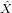
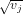
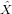
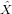

Statistics for LA-ICP-MS based fission track dating
Gower Street, London WC1E 6BT
p.vermeesch [at] ucl.ac.uk
Abstract
Despite the conceptual elegance and simplicity of the External Detector Method (EDM) for fission track dating, an increasing number of laboratories are switching to LA-ICP-MS as a means of measuring the uranium content of apatite, zircon and sphene. LA-ICP-MS based fission track (LAFT) dating offers shorter turnaround times, removes the need to handle radioactive materials and hydrofluoric acid, and facilitates double-dating with the U-Pb method. This paper aims to bring the statistical treatment of LAFT data on an equal footing with the EDM by formulating four different analytical protocols, depending on the accuracy and reproducibility of the uranium measurements. Under the ‘absolute’ dating approach, the spontaneous track densities and uranium concentrations are directly plugged into the fundamental fission track age equation, assuming that both of these measured quantities have been determined accurately, and that the fission decay constant and equivalent isotopic track length are known. The ‘zeta calibration’ approach avoids making these assumptions by normalisation to a reference material of known age. Uranium zoning has a detrimental effect on the accuracy of LAFT ages. This effect can be removed by counting only those fission tracks located within the laser ablation pit. Alternatively, the uranium heterogeneity may be quantified by fitting multiple ablation spots in some or all the analysed grains, using a (lognormal) distributional assumption for the uranium concentration. LAFT dating is arguably less well suited than the EDM to young and U-poor samples that lack sufficient spontaneous fission tracks to reveal visual evidence for uranium zoning. Such samples occasionally contain no fission tracks at all, resulting in infinite analytical uncertainties. This paper introduces a pragmatic solution to this problem, in which the uranium measurement are converted to ‘virtual’ induced fission track counts to produce strictly positive ages with finite standard errors. With the age equation and zero-track strategy in place, LAFT ages can be subjected to more sophisticated statistical analysis. Using a logarithmic transformation, these ages can be visualised on radial plots and deconvolved into finite and continuous mixtures. The methods proposed in this paper have been implemented in a software package called IsoplotR that is available free of charge at http://isoplotr.london-geochron.com.
1 Introduction
Spontaneous fission of naturally occurring 238U produces linear tracks of radiation damange in the crystal lattice of apatite, zircon and sphene at a rate of ~215 tracks per ng of U per million years. In a series of seminal papers published during the 1960s, Robert Fleischer, Paul B. Price and Robert Walker showed how these fission tracks can be revealed to the human eye (aided by an optical microscope) by acid etching, forming the basis of a unique geochronometer (Price and Walker, 1962, 1963; Fleischer et al., 1964, 1965, 1975). In its most basic form, the fundamental age equation of the fission track method can be written as follows:
|
| (1) |
where λ is the total decay constant of 238U (1.55125×10-10a-1; Jaffey et al., 1971), λf is the fission decay constant (with estimates ranging from 7.9 to 8.7×10-17a-1 and an IUPAC-IUGS-recommended value of 8.45 ± 0.10 ×10-17a-1; Holden and Hoffman, 2000), ρs is the density (tracks per unit area) of the spontaneous fission tracks on an internal crystal surface, [238U] is the current number of 238U atoms per unit volume, and L is etchable length (or, more precisely, the mean equivalent isotropic length; Galbraith and Laslett, 1988) of the fission tracks. During most of the 20th century, the only way to reliably estimate [238U] was by proxy, via induced tracks produced by neutron irradiation. During the 1970s, the fission track community experimented with a number of alternative designs to turn induced track densities into 238U-concentrations (such as the subtraction, population, and re-etch methods; Gleadow, 1981; Hurford and Green, 1982; Galbraith, 1984; Wagner and Van den Haute, 1992), before ultimately settling on the external detector method (EDM), in which the induced tracks are recorded in a mica- (or plastic) detector attached to the polished grain mount during irradiation. This detector is subsequently etched and counted separately (Fleischer and Hart, 1972; Hurford and Green, 1983; Hurford, 1990). The EDM emerged as the dominant method because it offers significant advantages over the other approaches. First, the EDM was recognised as the first geochronological method capable of routinely producing single grain age estimates, leading to the development of detrital geochronology. Second, it is least affected by the presence of uranium zoning. Third, it allows the fission decay constant (which used to be poorly constrained) to be hidden in a calibration constant (ζ) by reformulating the age equation as follows:
|
| (2) |
where ρi is the surface density of the induced fission tracks in the mica detector and ρd is the surface density of the induced fission tracks in a dosimeter glass of known (and uniform) U concentration. The latter value is needed to ‘recycle’ the calibration constant from one irradiation batch to the next as neutron fluences might vary between irradiations, or within a sample stack if the nuclear reactor is not well thermalised. ρs, ρi and ρd are unknown but can be estimated1 by counting the number of tracks N* over a given area A* (where * is either s for ‘spontaneous’, i for ‘induced’ or d for ‘dosimeter’):
|
| (3) |
It is customary for the spontaneous and induced fission tracks to be counted over the same area (i.e., As = Ai).
This can be done using an automated microscope stage (Smith and Leigh-Jones, 1985; Dumitru, 1993) or by
simply repositioning the mica detector on the grain mount after etching (Jonckheere et al., 2003). Using these
measurements, the apparent fission track age ( ) is given by
) is given by
|
| (4) |
where  is obtained by applying Equation 4 to an age standard and rearranging. Equation 4 represents a classic
case of a ‘matched pairs’ experimental design (Galbraith, 2010). By counting the spontaneous and induced tracks
over exactly the same area, the age calculation reduces to a simple comparison of two Poisson-distributed variables
(Ns and Ni). This enables an explicit maximum likelihood formulation, which greatly simplifies all subsequent
statistical analyses (Galbraith, 2005). As a result, it is fair to say that the fission track method represents the gold
standard among geochronometers in terms of statistical rigour. Unfortunately, the EDM also has a number of
practical shortcomings:
is obtained by applying Equation 4 to an age standard and rearranging. Equation 4 represents a classic
case of a ‘matched pairs’ experimental design (Galbraith, 2010). By counting the spontaneous and induced tracks
over exactly the same area, the age calculation reduces to a simple comparison of two Poisson-distributed variables
(Ns and Ni). This enables an explicit maximum likelihood formulation, which greatly simplifies all subsequent
statistical analyses (Galbraith, 2005). As a result, it is fair to say that the fission track method represents the gold
standard among geochronometers in terms of statistical rigour. Unfortunately, the EDM also has a number of
practical shortcomings:
- It requires irradiation with thermal neutrons. This greatly increases sample turnaround times and poses administrative and safety headaches. These problems are only getting worse with time as research reactors are becoming increasingly rare.
- Etching the external (mica) detectors requires handling hazardous hydrofluoric acid.
- The method is tedious and time consuming, as it requires counting three different track densities (spontaneous, induced and dosimeter).
The late 1980s and 1990s saw the emergence and maturation of ion (SIMS) and laser (LA-ICP-MS) microprobe technology allowing geoscientists, for the first time, to determine ppm-level 238U-concentrations of solid samples with microscopic resolution directly, rather than by proxy via induced fission of 235U. By the early 2000s, LA-ICP-MS technology had matured enough to be used for fission track dating. A proof-of-concept study by Hasebe et al. (2004) laid the foundations for this new approach, which has gradually gained popularity since (Hasebe et al., 2009; Chew and Donelick, 2012; Soares et al., 2014; Gleadow et al., 2015; Abdullin et al., 2016). But despite this popularity, relatively little work has been done to develop the statistical analysis of this new type of fission track data (Galbraith, 2010). Important issues such as error propagation and the treatment of ‘zero track’ grains are largely unsolved for LA-ICP-MS-based fission track (LAFT) dating. This limits the applicability of the method to young samples, and potentially compromises data quality in compositionally zoned crystals. The present paper addresses these issues by defining four different strategies towards LAFT dating, using either an absolute dating (Section 2) or a zeta calibration (Section 3) approach and using either a single or multiple laser spots per grain to account for uranium heterogeneity (Section 4). Section 5 introduces a method to calculate meaningful ages and uncertainties for very young and uranium-poor samples lacking any spontaneous fission tracks. With the age equation in place, we can redefine the pooled age and visualise LAFT data on radial plots, allowing us to assess whether the single grain ages are consistent within the analytical uncertainties (Section 6). Using a logarithmic transformation, this qualitative assessment can be formalised with a Chi-square test for age homogeneity. Samples failing this test are said to be ‘overdispersed’ and may be modelled using continuous or finite mixtures (Section 6). The methods described in this paper were implemented in a software package called IsoplotR. Section 7 applies IsoplotR to two real fission track datasets, providing practical examples of the absolute and zeta calibration approach using single and multiple laser spots per grain, and including zero track grains and finite mixtures.
2 ‘absolute’ fission track dating
The development of LA-ICP-MS has allowed fission track geochronologists to routinely determine the 238U-concentration of sand-sized crystals of apatite, zircon and sphene directly, rather than by proxy through neutron-induced fission of 235U. This opens up the possibility to use Equation 1 to calculate fission track ages:
|
| (5) |
where q is an ‘efficiency factor’ (0 < q < 1, Iwano and Danhara, 1998; Enkelmann and Jonckheere, 2003; Jonckheere, 2003; Soares et al., 2013) that depends on the mineralogy, etching conditions and observer; and [238Û] is the measured 238U-concentration, expressed in atoms of 238U per unit volume. Please note that uranium sitting near the counting surface of the grain will contribute more to the spontaneous track budget than more deeply seated uranium. So in the presence of uranium zoning, the LA-ICP-MS measurements should be weighted inversely with depth. For the remainder of this paper, we will assume that this depth weighting has either been done, or that the grains are not significantly zoned perpendicular to the etched surface. The effect of lateral zoning is covered in Section 4. Error propagation of Equation 5 follows the usual first order Taylor expansion (neglecting the systematic uncertainties in As, L and q):
|
| (6) |
where s[a] stands for “the standard error of a”.
3 The ‘zeta calibration’ approach
The apparent age estimates produced by Equation 5 are at most as accurate as the value for [238Û]. Unfortunately, it
is notoriously difficult to measure isotopic concentrations accurately by LA-ICP-MS. Such concentration
measurements are typically done by monitoring the isotope of interest (i.e., 238U) relative to a stoichiometric isotope
(xX, where x = 43 and X = Ca for apatite, or x = 29 and X = Si for zircon) and comparing the measured
signal ratios [238Û∕x ] with those of reference materials of known composition. Unfortunately, no such
materials exist for apatite, zircon and sphene (although some natural samples come close to fulfilling the
requirements; Soares et al., 2014), leading most laboratories to use NIST standard glass (SRM610 and
SRM612; Pearce et al., 1997) instead (Longerich et al., 1996; Norman et al., 1998; Liu et al., 2008).
However, glass interacts very differently with UV laser light than most minerals, and therefore the
accuracy of LA-ICP-MS based U-concentration measurements often leaves much to be desired. To avoid
these problems and remove the need to measure absolute concentrations, all the poorly constrained
factors that relate the raw mass spectrometer measurements (i.e., the 238U/xX-signal ratios) to the
238U-concentrations can be grouped into a ‘zeta’ calibration constant similar to that used for the EDM (Equation
4):
] with those of reference materials of known composition. Unfortunately, no such
materials exist for apatite, zircon and sphene (although some natural samples come close to fulfilling the
requirements; Soares et al., 2014), leading most laboratories to use NIST standard glass (SRM610 and
SRM612; Pearce et al., 1997) instead (Longerich et al., 1996; Norman et al., 1998; Liu et al., 2008).
However, glass interacts very differently with UV laser light than most minerals, and therefore the
accuracy of LA-ICP-MS based U-concentration measurements often leaves much to be desired. To avoid
these problems and remove the need to measure absolute concentrations, all the poorly constrained
factors that relate the raw mass spectrometer measurements (i.e., the 238U/xX-signal ratios) to the
238U-concentrations can be grouped into a ‘zeta’ calibration constant similar to that used for the EDM (Equation
4):
|
| (7) |
where icp is determined by analysing a reference material of known age, precisely as is done for the EDM. But unlike the EDM, the ζ-calibration constant for LAFT dating must be determined anew for every analytical session, to account for any changes in ablation and plasma conditions which may occur over time. Therefore, icp is known as a ‘session zeta’ (Hasebe et al., 2009). Single grain age uncertainties for the zeta-calibration approach are given by
|
| (8) |
4 Uranium zoning
The U-uncertainties (s[238Û] in Equation 6 and s[238Û∕x] in Equation 8) account for both the analytical error of
the LA-ICP-MS measurements and the uranium heterogeneity of the sample. The EDM is less sensitive to uranium
zoning, thanks to the ‘matched pairs’ experimental design discussed in Section 1. As long as the spontaneous and
induced track densities are counted over the same area, the presence of U-rich or U-poor zones has no effect on the
resulting age. Unfortunately, things are not so straightforward for LAFT data. Suppose, for example, that the
analyst has placed a round laser spot in the top half of the strongly zoned grain shown in Figure 1. This would
result in a high uranium concentration (or isotopic ratio measurement) and a small analytical uncertainty, but
would be completely unrepresentative of the average composition of the grain. Blindly combining such a single spot
measurement with the number of spontaneous fission tracks counted over the entire crystal would produce a
precise but grossly inaccurate age. For old and uranium-rich samples, it is often possible to detect and
avoid the problems caused by uranium zoning by carefully observing the spatial distribution of the
spontaneous tracks. But this is generally impossible for young and/or uranium-poor samples. Two analytical
strategies may be used to address this issue and capture the naturally occurring uranium dispersion by
LA-ICP-MS.
{kind=link}
A first approach is to only count the spontaneous fission tracks contained within the area occupied by the laser
ablation spot (Figure 2a). This effectively imposes a ‘matched pairs’ experimental design on the LAFT data which,
by definition, should capture uranium zoning effects. One can then safely plug the analytical errors of the
LA-ICP-MS measurements into Equation 6 or 8 to propagate the age uncertainty. However, the single spot approach
only uses a small part of the grains (so as to fit within the smallest one of them), containing a small
number of spontaneous tracks. Because the latter dominate the uncertainty budget of LAFT data,
the resulting single grain age estimates are imprecise despite the high precision of the isotope ratio
measurements.
The only way to avoid these problems and enlarge the spontaneous track counting area is to somehow quantify the naturally occurring uranium heterogeneity outside the ablation spot. This can be achieved by ablating some or all of the grains multiple times (Figure 2b) and making some form of parametric assumption for the uranium heterogeneity. A reasonable assumption would be that the 238U-concentrations or 238U/xX-ratios within each grain follow a lognormal distribution with location parameter uj and scale parameter  (for 1 ≤ j ≤ n, where n is the total number of grains):
|
| (9) |
where (uj,vj) stands for “a Normal distribution with mean uj and variance vj”. These parameters may be estimated by analysing multiple laser spots per grain. Let ûjl be the logarithm of the lth (out of mj) 238U-concentration or 238U/xX-ratio measurement of the jth grain, and let s[ûjl] be its standard error (which approximately equals the relative measurement uncertainty). If all the LA-ICP-MS measurements employ the same spot size, then uj can be estimated by taking the arithmetic mean of the single spot measurements ûjl (for l = 1...mj):
|
| (10) |
and vj is estimated by:
|
| (11) |
This formula clearly does not work for small grains that only fit a single laser ablation spot (mj = 1). It is therefore necessary to make the simplifying assumption that vj = v for all j. In that case, v may be estimated from the pooled measurements as follows:
|
| (12) |
where n degrees of freedom are subtracted to account for the n estimated parameters (ûj, for j = 1...n). The
single grain ages can be estimated by substituting exp[ûj] for [238U] or [238U∕xX] in Equation 5 or 7. In principle,
we could obtain the age uncertainties by substituting exp[ûj] for s[238Û] or s[238Û∕x] in Equation 6 or 8.
However, doing so would assign exactly the same relative U-concentration or -ratio uncertainty to all grains,
irrespective of whether the ablated area (mjAicp, where Aicp corresponds to the spot size) was small or large
compared to the area over which the spontaneous fission tracks were counted (Asj). This problem can be solved by
using the following hybrid expression:
for s[238Û] or s[238Û∕x] in Equation 6 or 8.
However, doing so would assign exactly the same relative U-concentration or -ratio uncertainty to all grains,
irrespective of whether the ablated area (mjAicp, where Aicp corresponds to the spot size) was small or large
compared to the area over which the spontaneous fission tracks were counted (Asj). This problem can be solved by
using the following hybrid expression:
|
| (13) |
which reduces to the LA-ICP-MS measurement uncertainties if the laser spot size equals the fission track
counting area (i.e., j = ∑
l=1mj(s[ûjl])2 if Aicp = Asj), and to Equation 12 if the laser spot size is much smaller
than the fission track counting area ( j = if Aicp ≪ Asj).
j = if Aicp ≪ Asj).
{kind=link}
5 The ‘zero tracks’ problem
The uncertainty propagation (Equations 6 and 8) shows that the standard error of the fission track age varies in inverse proportion to the spontaneous fission track count. Because the number of spontaneous fission tracks is usually quite low (especially for the single spot approach), the analytical uncertainty of fission track ages is generally dominated by the 1∕Ns term. For example, decreasing Ns from 100 to 4 inflates the relative age error associated with the spontaneous tracks from 10% to 50%. This further increases to 100% if Ns = 1. For a sample lacking any spontaneous fission tracks (Ns = 0), Equations 2-8 yield a zero age with infinite uncertainty. This effectively precludes any subsequent statistical analysis, such as averaging, mixture modelling, or thermal history analysis. For EDM data, the zero track problem can be solved by adding half a count to both the spontaneous and the induced tracks. This significantly improves the precision of the ages whilst only having a minor effect on their accuracy (Galbraith, 2005, p.80). Unfortunately this approach cannot be directly applied to the LAFT method, due to the absence of induced fission tracks. A pragmatic solution to this problem is to recast the LAFT age Equations (5 and 7) into an ‘EDM-like’ form:
|
| (14) |
where icp = 1 for the absolute dating method, and rj is a constant of proportionality that converts the (log)normally distributed 238U-concentration or 238U/xX-ratio measurements of the jth grain (ûj) into a Poisson distributed ‘equivalent induced track count’ (ij) over an area equal to that counted for the fossil tracks:
|
| (15) |
rj can be estimated using the property that the mean of a Poisson variable equals its variance:
|
| (16) |
Combining Equations 15 and 16, it is easy to show that
|
| (17) |
which can be plugged into Equation 14 to estimate the fission track age. Its standard error is given by
|
| (18) |
where the first term can be removed if the absolute dating method is used.
6 Radial plots and statistical models
The fission track method is a low precision technique. As explained in the previous section of this paper, single grain age uncertainties of 100% or more are not uncommon, especially in young and uranium-poor samples. To overcome this limitation and ‘beat down the noise’, it is generally necessary to analyse multiple grains from a sample and average them. There are several ways to do this. The simplest approach is to assume that all the grains have exactly the same age. This age can be estimated by pooling all the spontaneous track counts (Ns = ∑ j=1nNsj) and uranium measurements (û) together, with
|
| (19) |
The assumption of a single underlying age component can be tested by calculating the following statistic (Galbraith, 2010):
|
| (20) |
where
|
| (21) |
and
|
| (22) |
in which s[ j] indicates the standard error of the jth age measurement propagating the internal sources of analytical uncertainty only. This means that the uncertainties associated with icp or with the fractionation correction of the LA-ICP-MS measurements should be omitted. Fortunately, those uncertainties are usually much smaller than 1∕Ns. The probability of observing a value χstat2 under a Chi-square distribution with n - 1 degrees of freedom is called the ‘p-value’. If the latter falls below a pre-defined cutoff value of 0.05, say, then we have justifiable grounds to conclude that the data are ‘overdispersed’, rendering the pooled age inappropriate. The dispersion of fission track data can also be assessed visually using a radial plot (Galbraith, 1988, 1990). This is an (xj,yj)-scatterplot that sets the standarised estimates of the transformed variables zj (Equation 21) out against their respective analytical precision:
|
| (23) |
where z∘ is some conveniently chosen central value. This scatterplot may be decorated with a 2-sigma error bar about the origin and a radial scale drawn at some appropriate distance away from it. The power of the radial plot derives from its unique ability to simultaneously display the value and analytical uncertainty of measured quantities. The former is given by the slope of a line connecting the origin with any given sample point. The latter is given by its horizontal distance from the origin. In order for a fission track age population to be compatible with a single age component, the sample points should approximately plot within a band defined by two parallel lines going through the upper and lower limits of the 2-sigma error bar. Samples that fulfil this requirement generally pass the Chi-square test and can safely be represented by their pooled age. Samples that do not fit within a 2-sigma band and subsequently fail the Chi-square test may do so for several reasons. One possiblity is that their component grains exibit a range of annealing temperatures due to uranium heterogeneity, which may result in a continuous distribution of single grain fission track ages when subjected to a protracted history of slow cooling (Gleadow et al., 1986). In this case, the pooled age model is clearly inappropriate and is better replaced by a ‘random effects model’ in which the apparent fission track ages are assumed to follow a (log)normal distibution with two sources of variance:
|
| (24) |
whose unknown parameters (μ and σ) can be estimated from the data using the method of maximum likelihood
(Galbraith, 2005). Let and be those estimates, then exp[] is known as the ‘central age’ and
as the ‘(over)dispersion’. For the EDM, it can be shown that, when = 0, the central age equals
the pooled age. This is not exactly the case for LAFT data, although the difference is usually small
(Galbraith, 2010).
A second scenario in which fission track data might fail the Chi-square test is when the true age distribution consists of a finite mixture of discrete age components. If exp[μk] is the true age of the kth (out of K) such components, and πk is the proportion of grains belonging to it (with πK = 1 -∑ k=1K-1πk), then these 2K-1 unknown parameters can be estimated by numerically maximising the following log-likelihood function:
|
| (25) |
in which f(μk|zj,sj) equals the probability of observing a value μk under a Normal distribution with mean zj and standard deviation sj. Numerical recipes for solving Equations 24 and 25 are provided by Galbraith (2005).
{kind=link}
{kind=link}
7 Examples
| # | Ns | A (μm2) | U1 (ppm) | s[U1] (ppm) | U2 (ppm) | s[U2] (ppm) |
| FCT1 | 2 | 1600 | 12.22 | 0.22 | ||
| FCT2 | 2 | 900 | 3.76 | 0.06 | ||
| FCT3 | 3 | 1200 | 12.70 | 0.19 | ||
| FCT4 | 7 | 3200 | 10.95 | 0.24 | ||
| FCT5 | 9 | 1200 | 20.29 | 0.35 | ||
| FCT6 | 0 | 900 | 6.38 | 0.10 | ||
| FCT7 | 2 | 600 | 16.53 | 1.08 | ||
| FCT8 | 7 | 4200 | 17.34 | 0.38 | 14.86 | 0.40 |
| FCT9 | 3 | 2800 | 15.57 | 0.96 | 19.17 | 1.54 |
| FCT10 | 1 | 900 | 14.57 | 0.29 | ||
| FCT11 | 3 | 2000 | 13.51 | 0.22 | ||
| FCT12 | 5 | 1600 | 13.37 | 0.54 | ||
| FCT13 | 4 | 1800 | 13.88 | 0.24 | ||
| FCT14 | 1 | 1000 | 15.89 | 0.23 | ||
| FCT15 | 5 | 3600 | 5.57 | 0.11 | 12.31 | 0.38 |
| FCT16 | 1 | 1200 | 7.28 | 0.15 | ||
| FCT17 | 4 | 900 | 24.56 | 0.50 | ||
| FCT18 | 1 | 600 | 18.59 | 1.09 | ||
| FCT19 | 8 | 2400 | 16.47 | 0.40 | 17.60 | 0.31 |
| FCT20 | 2 | 1800 | 10.22 | 0.16 | ||
| FCT21 | 1 | 1600 | 12.20 | 0.27 | 5.86 | 0.12 |
| FCT22 | 2 | 1400 | 13.14 | 0.23 | ||
| FCT23 | 4 | 1800 | 16.67 | 0.33 | 15.91 | 0.35 |
| FCT24 | 8 | 2000 | 19.36 | 0.35 |
The methods introduced in this paper have been implemented in a software package called IsoplotR that exists within the statistical programming environment R. IsoplotR can be called from the command line by installing R from http://r-project.org and typing
at the command prompt. The package can be then be loaded using
Alternatively, most functions can also be accessed via a user-friendly graphical user interface (GUI) that can be accessed from http://isoplotr.london-geochron.com. This Section will illustrate some of IsoplotR’s functionality with two fission track datasets. The first of these was kindly provided by Dr. Noriko Hasebe (Kanazawa University) and applies the absolute dating method with multiple laser spots per grain to a sample of Fish Canyon apatite (28.8 ± 0.8 Ma, Gleadow et al., 2015). The second dataset was provided by Dr. David Chew (Trinity College Dublin) using the zeta-calibration method with a single laser spot per grain. It combines an artificial mixture of 30 measurements on Durango apatite (31.02 ± 0.22 Ma, McDowell et al., 2005) with a 29 further measurements of Mount Dromedary apatite (98.5 ± 0.5, McDougall and Wellman, 2011). The raw input data can either be copied and pasted into the GUI, or read from a .csv input file:
DUR <- read.data('DUR.csv',method='fissiontracks',format=2)
Chew <- read.data('Chew.csv',method='fissiontracks',format=2)
where the format argument to the read.data function records the input format of the fission track data. format=1 indicates the EDM, format=2 refers to LAFT dating using the zeta calibration method, and format=3 marks LAFT data using the absolute dating method. The files Hasebe.csv, DUR.csv, and Chew.csv are provided in the Supplementary Information. To calculate the fission track ages of the first dataset:
Note that the Fish Canyon dataset contains a zero track grain (FCT6 in Table 1) that has automatically been dealt with using the methods of Section 5. To plot the first dataset on a radial plot (Figure 3a):
which also calculates the central age of the dataset (32.6 ± 0.11 Ma with 7% of dispersion on a 1σ level). To set the ζ calibration factor for the second dataset:
where tst is a two-element vector containing the standard age and its analytical uncertainty. This yields a value (DUR$zeta) of 342 ± 23 a cm2 (1σ). To fit a two component mixture to the data and visualise the results as a radial plot:
which produces two peaks at 31.3 ± 2.3 Ma and 104.4 ± 8.1 Ma, in good agreement with the known ages of Durango2 and Mt. Dromedary apatite (Figure 3.b).
| # | Ns | A (μm2) | 238/43 | s[238/43] | # | Ns | A (μm2) | 238/43 | s[238/43] |
| DUR1 | 47 | 2210 | 0.15 | 0.009 | MD1 | 29 | 205 | 0.209 | 0.012 |
| DUR2 | 51 | 1870 | 0.171 | 0.01 | MD2 | 38 | 158 | 0.281 | 0.017 |
| DUR3 | 55 | 1840 | 0.166 | 0.01 | MD3 | 33 | 176 | 0.251 | 0.016 |
| DUR4 | 56 | 1740 | 0.162 | 0.01 | MD4 | 13 | 243 | 0.119 | 0.007 |
| DUR5 | 57 | 2020 | 0.166 | 0.01 | MD5 | 14 | 176 | 0.127 | 0.008 |
| DUR6 | 59 | 1860 | 0.142 | 0.008 | MD6 | 40 | 148 | 0.521 | 0.031 |
| DUR7 | 46 | 1450 | 0.185 | 0.011 | MD7 | 19 | 210 | 0.24 | 0.015 |
| DUR8 | 85 | 3050 | 0.158 | 0.01 | MD8 | 24 | 173 | 0.307 | 0.016 |
| DUR9 | 59 | 2100 | 0.132 | 0.008 | MD9 | 31 | 217 | 0.274 | 0.018 |
| DUR10 | 52 | 2010 | 0.141 | 0.009 | MD10 | 24 | 232 | 0.227 | 0.016 |
| DUR11 | 66 | 2110 | 0.183 | 0.011 | MD11 | 34 | 153 | 0.307 | 0.018 |
| DUR12 | 24 | 915 | 0.153 | 0.01 | MD12 | 33 | 183 | 0.369 | 0.022 |
| DUR13 | 33 | 1430 | 0.142 | 0.009 | MD13 | 29 | 238 | 0.183 | 0.012 |
| DUR14 | 34 | 1070 | 0.169 | 0.01 | MD14 | 36 | 228 | 0.253 | 0.018 |
| DUR15 | 59 | 1700 | 0.175 | 0.011 | MD15 | 33 | 240 | 0.188 | 0.012 |
| DUR16 | 46 | 1810 | 0.147 | 0.009 | MD16 | 26 | 182 | 0.206 | 0.014 |
| DUR17 | 63 | 2390 | 0.138 | 0.008 | MD17 | 28 | 262 | 0.159 | 0.01 |
| DUR18 | 94 | 2300 | 0.185 | 0.011 | MD18 | 20 | 219 | 0.207 | 0.014 |
| DUR19 | 58 | 1940 | 0.16 | 0.01 | MD19 | 23 | 154 | 0.297 | 0.02 |
| DUR20 | 37 | 1550 | 0.145 | 0.01 | MD20 | 25 | 111 | 0.348 | 0.02 |
| DUR21 | 40 | 1490 | 0.145 | 0.009 | MD21 | 25 | 249 | 0.148 | 0.01 |
| DUR22 | 50 | 1870 | 0.155 | 0.01 | MD22 | 26 | 169 | 0.29 | 0.018 |
| DUR23 | 27 | 1460 | 0.132 | 0.009 | MD23 | 32 | 174 | 0.207 | 0.015 |
| DUR24 | 32 | 1050 | 0.177 | 0.011 | MD24 | 26 | 134 | 0.339 | 0.023 |
| DUR25 | 41 | 1900 | 0.124 | 0.009 | MD25 | 15 | 248 | 0.093 | 0.006 |
| DUR26 | 39 | 1660 | 0.132 | 0.009 | MD26 | 15 | 133 | 0.233 | 0.016 |
| DUR27 | 40 | 1630 | 0.152 | 0.01 | MD27 | 16 | 160 | 0.121 | 0.007 |
| DUR28 | 40 | 1380 | 0.143 | 0.01 | MD28 | 19 | 208 | 0.216 | 0.015 |
| DUR29 | 56 | 1780 | 0.149 | 0.01 | MD29 | 25 | 143 | 0.248 | 0.017 |
| DUR30 | 71 | 2110 | 0.182 | 0.013 | |||||
8 Discussion and conclusions
This paper has introduced four different analytical approaches towards LAFT dating (Table 3).
- The simplest approach is to apply the absolute dating method (Equation 5) using the analytical uncertainty of a single LA-ICP-MS measurement per grain (Equation 6). Though straightforward in theory, this approach may be inaccurate in practice due to the lack of matrix-matched uranium concentration standards for LA-ICP-MS (Section 2). The single spot approach is also imprecise for most common samples due to the small number of spontaneous tracks counted within the area occupied by the ablation pit.
- The accuracy can be improved by tying the sample measurements to a reference material of known age, analysed under the same conditions as the sample, using the ζ-calibration constant and Equation 7. However, the precision may still be low if a single laser spot is used, for reasons given under analytical approach 1.
- The number of spontaneous track counts per grain may be increased by placing multiple ablation pits on some or all of the grains. When applied to the absolute dating method, this yields precise but potentially inaccurate results, for reasons given under approach 1.
- Potentially the most accurate and precise approach to LAFT dating combines the ζ-calibration approach with multiple laser spots. The only caveat of this method is that it requires considerably more work than the single spot absolute dating approach, because it involves multiple measurements of not only the samples, but the reference material as well.
Using these four approaches, we have seen how LAFT dating can overcome the problems of uranium zoning and zero track grains. Nevertheless, it is fair to say that the EDM is still superior to LAFT dating in some ways. As we saw in Section 1, EDM data are based on the ratios of two independent Poisson variables. This produces statistical models that are convincing on physical grounds and well verified empirically. In contrast with this, LAFT data are based on mixed ratios of Poisson and (log)normally distributed variables that are not easily captured in parametric statistical models. So instead such models use the ages and errors for further inference, rather than the raw fission track data. These models generally assume (log)normality of the analytical uncertainties, which is only approximately correct. When a LAFT dataset fails the chi-square test for age homogeneity, say, then it might not do so for geological reasons. Instead, it is possible that the dataset fails the test simply because its parametric assumptions are not met. With this caveat in mind, LAFT offers clear practical advantages over EDM-based fission track data including higher throughput and the ease of double dating with the U-Pb method (Chew and Donelick, 2012). It seems very likely, then, that LAFT will continue to gain popularity at the expense of EDM-based fission track dating. IsoplotR aims to facilitate this transition, and to help extract geologically meaningful information from future LAFT datasets with the greatest possible accuracy and easy of use.
| single laser spot | multiple laser spots | |
| absolute age equation | 1. fastest, least accurate, least precise | 3. fast, least accurate, most precise |
| ζ-calibration method | 2. slow, most accurate, least precise | 4. slowest, most accurate, most precise |
9 Acknowledgments
The author would like to thank Noriko Hasebe and David Chew for sharing the datasets in Tables 1 and 2. Raymond Jonckheere and Christoph Glotzbach are gratefully acknowledged for their prompt and meticulous reviews. The author was financially supported by ERC Starting Grant 259504 (‘KArSD’) and NERC Standard Grants NE/I008837/1 and NE/K003232/1.
References
Abdullin, F., Solé, J., Meneses-Rocha, J. d. J., Solari, L., Shchepetilnikova, V., and Ortega-Obregón, C. LA-ICP-MS-based apatite fission track dating of the Todos Santos Formation sandstones from the Sierra de Chiapas (SE Mexico) and its tectonic significance. International Geology Review, 58(1):32–48, 2016.
Chew, D. M. and Donelick, R. A. Combined apatite fission track and U-Pb dating by LA-ICP-MS and its application in apatite provenance analysis. Quantitative Mineralogy and Microanalysis of Sediments and Sedimentary Rocks: Mineralogical Association of Canada, Short Course, 42:219–247, 2012.
Dumitru, T. A. A new computer-automated microscope stage system for fission-track analysis. Nuclear Tracks and Radiation Measurements, 21(4):575–580, 1993.
Enkelmann, E. and Jonckheere, R. Correction factors for systematic errors related to the track counts in fission-track dating with the external detector method. Radiation Measurements, 36(1):351–356, 2003.
Fleischer, R. and Hart, H. Fission track dating: techniques and problems. In Bishop, W., Miller, J., and Cole, S., editors, Calibration of Hominoid Evolution, pages 135–170. Scottish Academic Press Edinburgh, 1972.
Fleischer, R., Price, P., Symes, E., and Miller, D. Fission-track ages and track-annealing behavior of some micas. Science, 143(3604):349–351, 1964.
Fleischer, R. L., Price, P. B., and Walker, R. M. Tracks of charged particles in solids. Science, 149 (3682):383–393, 1965.
Fleischer, R. L., Price, P. B., and Walker, R. M. Nuclear tracks in solids: principles and applications. Univ of California Press, 1975.
Galbraith, R. Statistics for LA-ICPMS fission track dating. Thermo2010 - 12th International Conference on Thermochronology, Glasgow, page 175, 2010.
Galbraith, R. F. The radial plot: graphical assessment of spread in ages. Nuclear Tracks and Radiation Measurements, 17:207–214, 1990.
Galbraith, R. F. Statistics for fission track analysis. CRC Press, 2005.
Galbraith, R. On statistical estimation in fission track dating. Mathematical Geology, 16(7):653–669, 1984.
Galbraith, R. Graphical display of estimates having differing standard errors. Technometrics, 30(3): 271–281, 1988.
Galbraith, R. and Laslett, G. Some calculations relevant to thermal annealing of fission tracks in apatite. In Proceedings of the Royal Society of London A: Mathematical, Physical and Engineering Sciences, volume 419, pages 305–321. The Royal Society, 1988.
Gleadow, A. Fission-track dating methods: what are the real alternatives? Nuclear Tracks, 5(1):3–14, 1981.
Gleadow, A., Duddy, I., Green, P. F., and Lovering, J. Confined fission track lengths in apatite: a diagnostic tool for thermal history analysis. Contributions to Mineralogy and Petrology, 94(4):405–415, 1986.
Gleadow, A., Harrison, M., Kohn, B., Lugo-Zazueta, R., and Phillips, D. The Fish Canyon Tuff: A new look at an old low-temperature thermochronology standard. Earth and Planetary Science Letters, 424: 95–108, 2015.
Hasebe, N., Barbarand, J., Jarvis, K., Carter, A., and Hurford, A. J. Apatite fission-track chronometry using laser ablation icp-ms. Chemical Geology, 207(3):135–145, 2004.
Hasebe, N., Carter, A., Hurford, A. J., and Arai, S. The effect of chemical etching on LA–ICP-MS analysis in determining uranium concentration for fission-track chronometry. Geological Society, London, Special Publications, 324(1):37–46, 2009.
Holden, N. E. and Hoffman, D. C. Spontaneous fission half-lives for ground-state nuclide (technical report). Pure and applied chemistry, 72(8):1525–1562, 2000.
Hurford, A. J. and Green, P. F. The zeta age calibration of fission-track dating. Chemical Geology, 41: 285 – 317, 1983. ISSN 0009-2541. doi: 10.1016/S0009-2541(83)80026-6.
Hurford, A. J. Standardization of fission track dating calibration: recommendation by the Fission Track Working Group of the IUGS Subcommission on Geochronology. Chemical Geology: Isotope Geoscience Section, 80(2):171–178, 1990.
Hurford, A. J. and Green, P. F. A users’ guide to fission track dating calibration. Earth and Planetary Science Letters, 59(2):343–354, 1982.
Iwano, H. and Danhara, T. A re-investigation of the geometry factors for fission-track dating of apatite, sphene and zircon. In Advances in Fission-Track Geochronology, pages 47–66. Springer, 1998.
Jaffey, A., Flynn, K., Glendenin, L., Bentley, W., and Essling, A. Precision measurement of half-lives and specific activities of u235 and u238. Physical Review C, 4(5):1889, 1971.
Jonckheere, R. On the densities of etchable fission tracks in a mineral and co-irradiated external detector with reference to fission-track dating of minerals. Chemical Geology, 200(1):41–58, 2003.
Jonckheere, R., Ratschbacher, L., and Wagner, G. A. A repositioning technique for counting induced fission tracks in muscovite external detectors in single-grain dating of minerals with low and inhomogeneous uranium concentrations. Radiation Measurements, 37(3):217–219, 2003.
Ksienzyk, A. K., Dunkl, I., Jacobs, J., Fossen, H., and Kohlmann, F. From orogen to passive margin: constraints from fission track and (U–Th)/He analyses on Mesozoic uplift and fault reactivation in SW Norway. Geological Society, London, Special Publications, 390:SP390–27, 2014.
Liu, Y., Hu, Z., Gao, S., Günther, D., Xu, J., Gao, C., and Chen, H. In situ analysis of major and trace elements of anhydrous minerals by LA-ICP-MS without applying an internal standard. Chemical Geology, 257(1):34–43, 2008.
Longerich, H. P., Jackson, S. E., and Gunther, D. Inter-laboratory note. laser ablation inductively coupled plasma mass spectrometric transient signal data acquisition and analyte concentration calculation. J. Anal. At. Spectrom., 11:899–904, 1996. doi: 10.1039/JA9961100899.
McDougall, I. and Wellman, P. Calibration of GA1550 biotite standard for K/Ar and 40Ar/39Ar dating. Chemical Geology, 280(1):19–25, 2011.
McDowell, F. W., McIntosh, W. C., and Farley, K. A. A precise 40Ar–39Ar reference age for the Durango apatite (U–Th)/He and fission-track dating standard. Chemical Geology, 214(3):249–263, 2005.
Norman, M., Griffin, W., Pearson, N., Garcia, M., and Oreilly, S. Quantitative analysis of trace element abundances in glasses and minerals: a comparison of laser ablation inductively coupled plasma mass spectrometry, solution inductively coupled plasma mass spectrometry, proton microprobe and electron microprobe data. Journal of Analytical Atomic Spectrometry, 13(5):477–482, 1998.
Pearce, N. J. G., Perkins, W. T., Westgate, J. A., Gorton, M. P., Jackson, S. E., Neal, C. R., and Chenery, S. P. A Compilation of New and Published Major and Trace Element Data for NIST SRM 610 and NIST SRM 612 Glass Reference Materials. Geostandards Newsletter, 21:115–144, 1997.
Price, P. and Walker, R. Observation of fossil particle tracks in natural micas. 1962.
Price, P. and Walker, R. Fossil tracks of charged particles in mica and the age of minerals. Journal of Geophysical Research, 68(16):4847–4862, 1963.
Smith, M. and Leigh-Jones, P. An automated microscope scanning stage for fission-track dating. Nuclear Tracks and Radiation Measurements (1982), 10(3):395–400, 1985.
Soares, C., Guedes, S., Hadler, J., Mertz-Kraus, R., Zack, T., and Iunes, P. Novel calibration for LA-ICP-MS-based fission-track thermochronology. Physics and chemistry of minerals, 41(1):65–73, 2014.
Soares, C. J., Guedes, S., Tello, C. A., Lixandrao Filho, A. L., Osorio, A. M., Alencar, I., Dias, A. N., and Hadler, J. Further investigation of the initial fission-track length and geometry factor in apatite fission-track thermochronology. Am Mineral, 98:1381–1392, 2013.
Wagner, G. A. and Van den Haute, P. Fission-Track Dating. Kluwer Academic Publishers, Dordrecht, 1992.